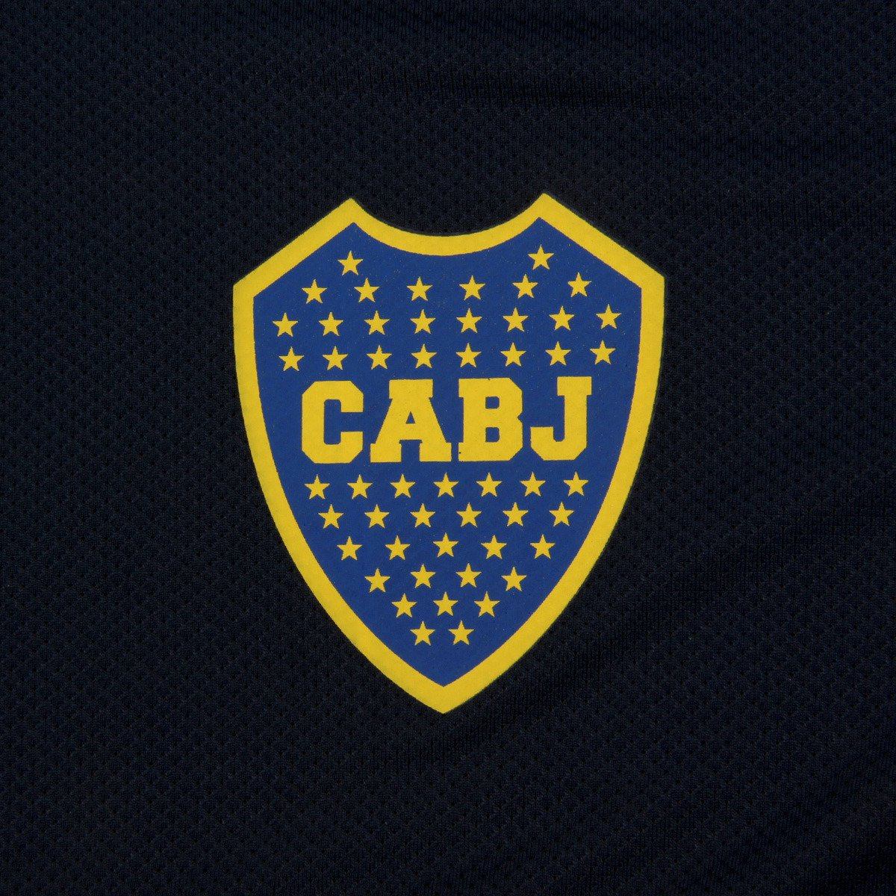
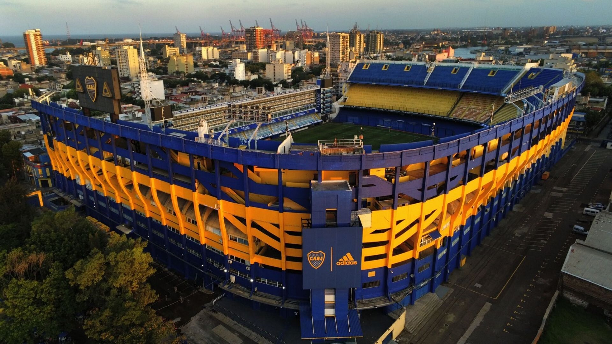

HISTORIA DEL CLUB
Boca Juniors fue fundado en Buenos Aires el 3 de abril de 1905, en una década fundacional en la que se crearon no menos de 300 clubes de fútbol. Para entonces hacía casi cuarenta años que se practicaba el fútbol en la Argentina y catorce años desde la creación de la liga amateur, la tercera liga más antigua del mundo, luego de la inglesa y la escocesa. La fundación de Boca Juniors fue obra de seis adolescentes, hijos de italianos y vecinos de La Boca, barrio de trabajadores inmigrantes y fuerte identidad genovesa («xeneize» en dialecto): Esteban Baglietto, Alfredo Scarpati, Santiago Sana, Tomás Movio, los hermanos Juan Antonio Farenga y José Teodoro Farenga, Luis De Harenne y otros. Baglietto, Scarpatti y Sana, eran compañeros en la Escuela Superior de Comercio (Carlos Pellegrini desde 1908), ubicada entonces en la calle Bartolomé Mitre 1364. Allí tenían como profesor de educación física, al irlandés Paddy MacCarthy, uno de los precursores del boxeo en Argentina, quien también había sido futbolista y que inculcaba en sus alumnos el valor del deporte, a la vez que les enseñaba las técnicas del boxeo y del fútbol. El director del colegio, el profesor Santiago Fitz Simon, fue uno de los pioneros en la Argentina en la inclusión de la educación física y del deporte como disciplina sistemática en la educación de los jóvenes, siendo el primero en Argentina en implementar la enseñanza de la educación física en la escuela.

LA BOMBONERA
El sábado 25 de mayo de 1940 quedó oficialmente inaugurado con eventos que comenzaron temprano. A las nueve horas aproximadamente, una caravana de autos partió desde la sede social en Almirante Brown 967. A las 11, el entonces presidente Camilo Cichero, cortó las cintas celestes y blancas para habilitar el estadio en forma oficial. El cardenal Copello, a continuación, bendijo las instalaciones. Luego vinieron los desfiles de exdirigentes y jugadores, entre otras figuras y emblemas del club. Curiosamente, ese mismo día también falleció el tercer presidente en la historia de Boca y hasta en ese entonces miembro de la comisión directiva de turno, Juan Brichetto.
A continuación, se jugó el primer partido, contra el Club Atlético San Lorenzo de Almagro, que terminó con un 2:0 a favor del equipo local. Debido a la falta de luz artificial, se programaron solamente dos tiempos de 35'. El primer gol en el recinto fue convertido a los 13 minutos de juego por Ricardo Alarcón, y Aníbal Tenorio selló el marcador a los 33'.
Ese día, Boca Juniors salió a la cancha con la siguiente alineación: Estrada; Ibáñez, Valussi; Viana, Lazzatti, Arcadio López; Tenorio, Alarcón, Sarlanga, Gandulla y Sas. En el entretiempo, ingresaron Angeletti, Gelpi y Carniglia. El entrenador fue Enrique Sobral.
